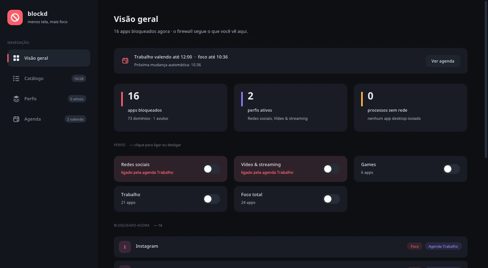
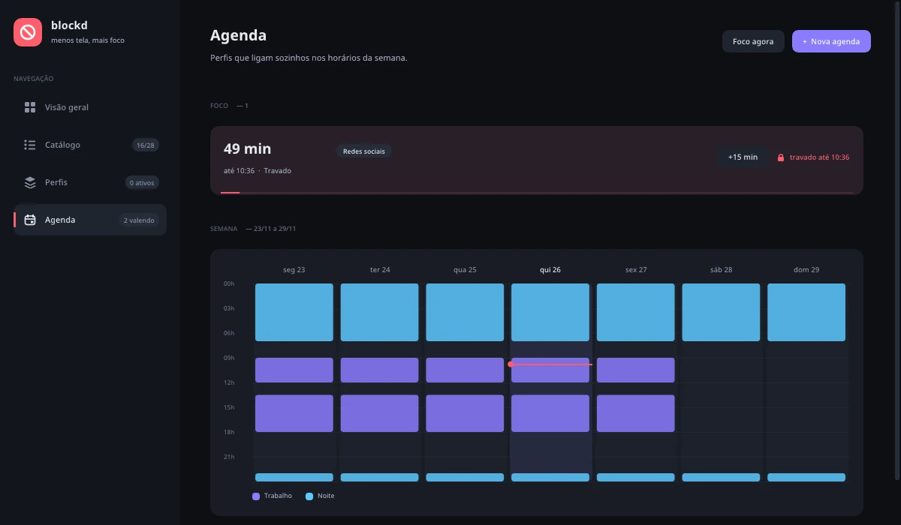

Catálogo e perfis
Ligue um app avulso ou um perfil inteiro: Redes sociais, Vídeo, Games, Trabalho, Foco total. Ou monte o seu a partir do que já está bloqueado.
blockctl profile on redes-sociais games
Código aberto · GPL-3.0 · Linux e Windows
Escolha apps num catálogo, monte perfis e deixe o blockd ligar o bloqueio sozinho nos horários da semana, ou num foco com hora para acabar. Por baixo, firewall e DNS ficam sempre sincronizados com o que você vê na tela.

28 apps no catálogo, prontos para bloquear. E você adiciona os seus.
Como funciona
Valem ao mesmo tempo. O que fica bloqueado é a união de tudo, e desligar um não libera o que outro ainda segura.
Ligue um app avulso ou um perfil inteiro: Redes sociais, Vídeo, Games, Trabalho, Foco total. Ou monte o seu a partir do que já está bloqueado.
blockctl profile on redes-sociais games
Janelas como seg–sex, 9h às 12h ligam os perfis sozinhas, no minuto exato. Cruzam a meia-noite, e um feriado se pula com um comando.
--window "seg-sex 09:00-12:00"
50 minutos agora, ou até as 18h. O foco desliga sozinho no fim, e dá para estender sem recomeçar.
blockctl focus start redes-sociais --for 50m

A agenda mostra o que vale agora, o que vem depois e quando o bloqueio muda sozinho. A linha vermelha é o agora.
00:00-00:00 é o dia inteiro; 23:00-07:00 cruza a meia-noiteModos
Cada agenda e cada foco tem um modo. Ele diz o que acontece quando bate a vontade de desligar enquanto o bloqueio vale.
livre
Para quando você só quer um lembrete. A pausa vale até o fim da janela.
fricção
Você digita uma frase, que o daemon confere, e a pausa só começa depois de N minutos. Muitas vezes a vontade passa antes disso. Dá para cancelar o pedido no meio.
travado
Até a janela acabar, o daemon recusa qualquer coisa que afrouxe o bloqueio: desligar, apagar, encurtar, trocar por um modo mais fraco. Acrescentar sempre pode.
$ blockctl focus start redes-sociais --for 50m --mode travado ● foco f1: redes-sociais até 10:36 · travado $ blockctl focus stop f1 erro: não dá para pausar o foco antes de 10:36: o modo é travado $ blockctl focus extend f1 --for 15m ● foco f1: redes-sociais até 10:51 · travado
Por dentro
Um daemon com privilégio de administrador aplica o bloqueio no sistema e o reconcilia a cada 15 segundos. Se alguém mexer no firewall ou no DNS por fora, ele reaplica e registra.
Os nomes bloqueados respondem NXDOMAIN. Os resolvedores
DNS-over-HTTPS públicos também são fechados, senão o navegador contornaria.
Regras em nftables no Linux e filtros WFP
no Windows, que valem com o firewall do sistema ligado ou desligado.
Discord, Steam e afins continuam abertos, só que sem internet. Jogos abertos pela Steam herdam o bloqueio.
Quando um site entra no bloqueio, o blockd derruba as conexões em uso, e o x.com que estava aberto para de carregar em instantes.
Linux
nftables · dnsmasq + systemd-resolved · cgroup
Windows
WFP · regras NRPT + sinkhole DNS · filtro por executável
Download
Gratuito e de código aberto. Sempre a última versão.
A primeira versão ainda está saindo do forno. Enquanto isso, dá para compilar seguindo o README.
Recomendado para você
AppImage · x86_64
chmod +x blockd-x86_64.AppImagesystemd com systemd-resolved ativo, mais nftables e
dnsmasq. Se faltar algo, o instalador mostra o comando da sua distro:
sudo apt install nftables dnsmasq-base # Debian, Ubuntu sudo dnf install nftables dnsmasq # Fedora sudo pacman -S nftables dnsmasq # Arch
No terminal: ./blockd-x86_64.AppImage --status, --install,
--uninstall ou blockctl …. No Arch também dá para usar o
PKGBUILD.
Recomendado para você
Instalador · 10 (1803+) ou 11, 64 bits
blockd-setup.exe e aceite o pedido de administrador.blockd-setup.exe -install blockd-setup.exe -uninstall
Rodar o setup de novo atualiza, ou remove, o que já estiver instalado.
SHA256SUMS · Todas as versões · Código-fonte · macOS ainda não é suportado
Dúvidas
Dá, e isso é de propósito. Com a senha de administrador você consegue desmontar tudo. As travas existem contra a impulsividade, não contra o dono do computador. A ideia é colocar fricção suficiente para a vontade passar. VPNs que forçam o próprio DNS e apps que embutem IPs fixos também escapam do bloqueio por DNS.
Não. As regras ficam no sistema e continuam valendo com a GUI fechada, e até com o
serviço parado. Para limpar tudo é preciso remover o blockd ou rodar o
blockd teardown como administrador.
Não. Não tem conta, nuvem nem telemetria. O estado fica no próprio computador
(/var/lib/blockd ou %ProgramData%\blockd), e o código está aberto
para quem quiser conferir.
No Linux, rode ./blockd-x86_64.AppImage --uninstall. No Windows, vá em
Configurações › Aplicativos › blockd. Nos dois casos as regras saem do sistema, e o
estado fica guardado caso você volte.
A GUI é só uma casca sobre o blockctl. Com --json, todo
comando devolve {"ok":true,"data":…}, então dá para automatizar o que
quiser: atalhos, scripts, integração com o gerenciador de janelas.